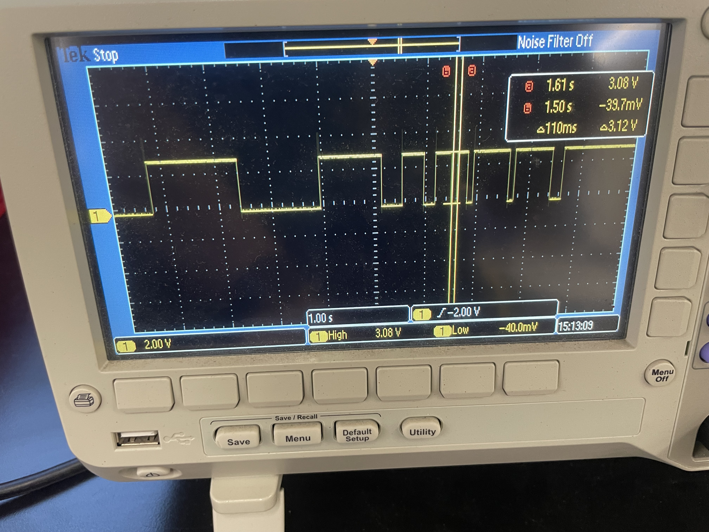

<div class="textcontainer">
<p class="margin"> </p>
<h3>Week 7: Electronic Outputs</h3>
<h4>This week we had to use the oscilloscope to analyze our circuits, the time domain they lived in, and the associated speed.
For this assignment I desided to resucitate my project from the previous week, the ultrasonic distance sensor that
lighted up a green LED when an object was less than 10 cm away from the sensor. At the beginning I faced some
difficulties because I forgot to ground the oscilloscope itself. However, after correcting that with Bobby's help,
I was able to get a coherent reading from the oscilloscope.
</h4>

<h4>This graph, produced by the oscilloscope, let's us see that the time domain is within the seconds. The graph is
the result of triggering and untriggering the LED as fast as I could. The smallest interval is only 110 ms which
indicates that the time domain is really in the seconds rather than the miliseconds. Additionally, we can
observe the voltage around 3V when the LED turns on and around 0V when it is off. This is consistent with the circuit.
Lastly, since this is an input triggered system, it is evident that the system is not subject to any clock or similar device.
</h4>
<h3>Minimum Viable Product for Final Project</h3>
</div>